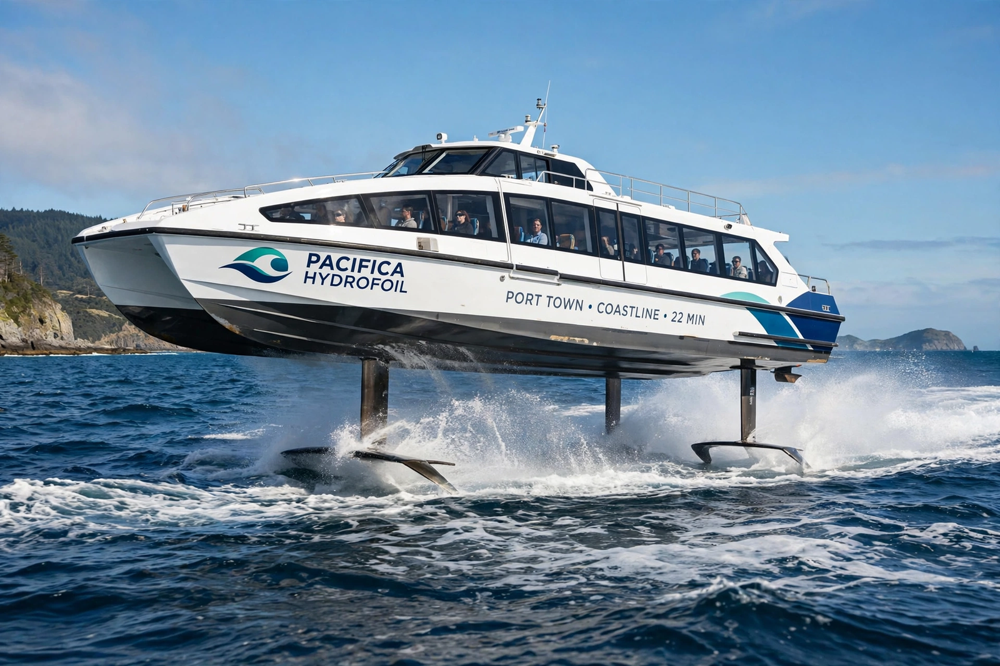

Hydrofoil
From Wikipedia, the free encyclopedia

A hydrofoil ferry at speed.A hydrofoil is a fast vessel whose hull lifts clear of the water at speed on submerged wings (foils), greatly reducing drag. Hydrofoils have served as fast ferries (the Russian Raketa and Meteor river craft, Boeing\'s 929 Jetfoil), naval patrol craft, and racing sailboats, whose foiling revolution — from Moth dinghies to America\'s Cup AC75s and SailGP F50s — has transformed sailing speeds, with boats routinely exceeding 50 knots.
Principle and history
As speed rises, lift from the foils raises the hull; fully submerged foils with incidence control (Jetfoil) or surface-piercing V-foils (many ferries) provide stability. Enrico Forlanini demonstrated a ladder-foil boat in 1906, and Alexander Graham Bell\'s HD-4 set a marine speed record of 114 km/h in 1919 that stood for a decade.
Ferry and naval use
The Soviet Union built thousands of river hydrofoils; Mediterranean and Hong Kong routes used Jetfoils and Rodriguez craft. Navies tested missile hydrofoils (US Pegasus class, 1977–93) but costs limited adoption. Foiling ferries are reviving electrically (Candela\'s P-12, in Stockholm service from 2024) with big energy savings.
Sailing foils
Development classes (International Moth) pioneered wand-controlled foils; the 2013 America\'s Cup foiling catamarans made the technology mainstream in sport, and offshore foiling monohulls (IMOCA 60s) now race around the world.